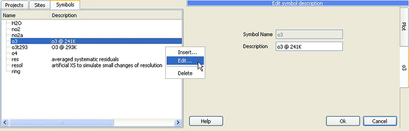

QDOAS Symbols Properties

Before configuring the analysis, the user must define the list of all relevant symbols that will be used. These symbols are needed to build cross-sections files filters, to link AMF and cross-section files and for internal manipulations (Molecules and Shift and Stretch pages of Analysis Windows properties).
Cross-sections symbols can be completed with a short description. The deletion of a symbol is possible only if this symbol is not used in the configuration of a project or an analysis window.